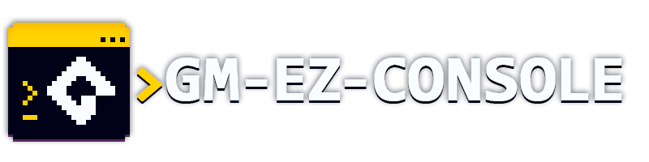

A GameMaker Studio 2.3+ extension that adds a customizable debug console to your game.
Author and Collaborators
Originally created by @DAndrewBox.
Special Thanks
- YoYo Games for creating GameMaker.
- Ænigma For creating the
visitorpixel font used on this project.
Table of Contents
Contributing
If you want to contribute to this project, you can do so by forking this repository, finding the addecuate branch and submitting a pull request. You can also submit an issue if you find a bug or want to suggest a new feature, I'm open to add new features to this extension as long as I can see a use for it.
License
This project is licensed under the MIT License. See the LICENSE file for more details.
Versioning and Compatibility
Any of the releases of this extension are compatible with GameMaker Studio from versions 2.3 to 2022.11 (Including 2022.x LTS). But the table below shows the compatibility of each release.
✅: Fully compatible. (*: Recommended for this version.)
⚠️: Compatible but could have some compatibility issues with the new features of the version.
❌: Not compatible.
| GameMaker Version | GM-EzConsole v1.0 | GM-EzConsole v1.1 | GM-EzConsole v1.2 |
|---|---|---|---|
| Studio 1.4.x | ❌ | ❌ | ❌ |
| Studio 2 - 2.2 | ❌ | ❌ | ❌ |
| Studio 2.3.x | ✅* | ❌ | ❌ |
| 2022.1 - 2022.9 | ✅* | ❌ | ❌ |
| 2022.x LTS | ✅* | ⚠️ | ❌ |
| 2022.11 | ⚠️ | ✅ | ✅* |
| 2023.1 | ⚠️ | ✅ | ✅* |